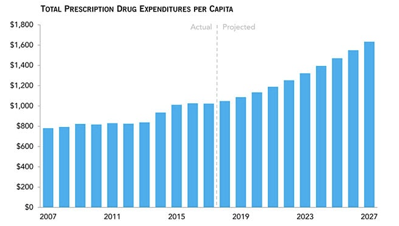

Analysis of Prescription Drug Expenditure

Context
The United States leads globally in total drug expenditures and is expected to remain among the top spenders through 2027.
Aim
Introducing a utility-based pattern extraction designed to identify a variety of high-utility drug expenditure patterns that consider multiple variables and allows for the design of more targeted policy interventions.
Outcomes
Provided insights into how prescription drug costs vary by socio-demographic factors, helping policymakers understand affordability challenges.
Contributors
Vinmathi Iyappan, Dr. Surendra Sarnikar
Learnings
Python, Machine Learning, Dimensionality Reduction, Literature Review, Conference Presentations, Abstract Writing, Data Wrangling